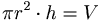
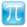

De: La Frikipedia, la enciclopedia extremadamente seria.
De: La Frikipedia, la enciclopedia extremadamente seria. De: La Frikipedia, la enciclopedia extremadamente seria.

|
ATENCIÓN Este artículo es un truño, es sólo un esbozo de un artículo o es demasiado corto o el que lo ha escrito se cree que esto es un vil diccionario. Su autor puede estar bajo los efectos del alcohol o ser un inútil. Quizá haya pistas en la discusión. ¡Mejora la Frikipedia ampliando y mejorando el artículo! |
El Principio de Cavalieri es un teorema absurdo escrito por un tío una persona que se aburría bastante. Hay teorías que dicen que era un trabajo de 2.
El principio de Cavalieri dice así:
"Si dos cuerpos tienen la misma altura y al cortarlos por planos paralelos a las bases obtenemos figuras con la misma área, los cuerpos tienen el miso volumen."
Sí, esta fue la maravillosa idea de Alicia Cavalieri, a quien le habían adelantado la paga tras la promesa de que en el próximo examen de mates no sacaría un puto 2. Ella esperaba sacar un 1, pero las espectativas no se cumplieron. Todo apunta a una conspiración por parte de sus profesores... Desde luego no se merecía un 2, la pobre...
A partir del descubrimiento se hicieron muchas investigaciones avanzadas, y se llegó a la conclusión de que:

Para más información sobre Alicia Cavalieri, véase:
|  Matemáticas | |
|
Álgebra y Aritmética
Estadística
|
Autor(es):